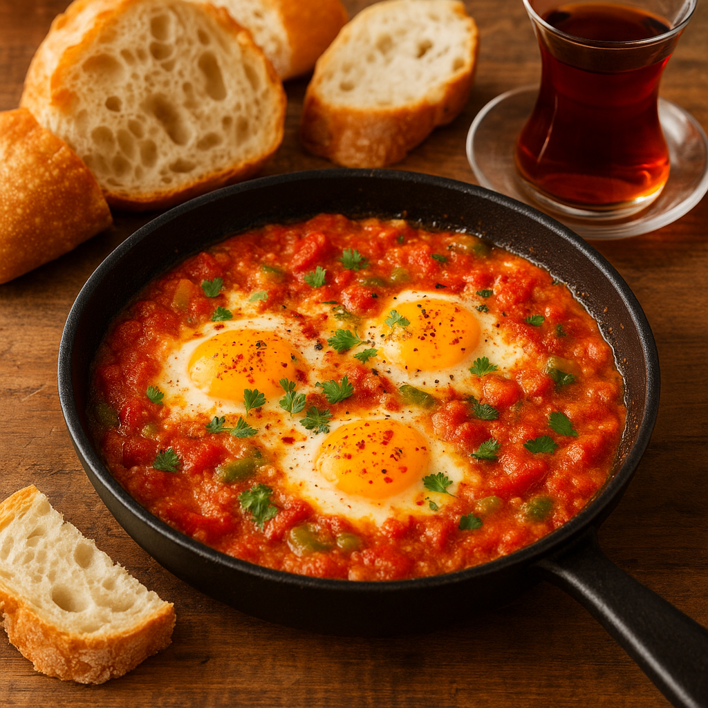

Menemen 🍅🧅

Süre: Hazırlık 5 dk + Pişirme 12-15 dk = Toplam 20 dk
- Malzemeler:
- 4 adet yumurta
- 3 adet domates (rendelenmiş/kuşbaşı)
- 2 adet yeşil biber (doğranmış)
- 1 küçük soğan (isteğe bağlı)
- 2 yemek kaşığı zeytinyağı
- Tuz, karabiber, pul biber